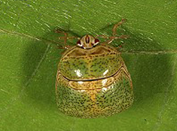

| Home |
| PULSES |
| 1. Bean Aphid |
| 2. Thrips |
| 3. Whitefly |
| 4. Green Leafhopper |
| 5. Pod Bug |
| 6. Lab-lab bugs / Stink bug |
| 7. leaf webber |
| 8. lab-lab leaf miner |
| 9. termites |
| questions |
| download notes |
PESTS OF PULSES :: Major Pests :: Lablab Bugs / Stink Bugs
6. Lablab bugs / stink bug: Coptosoma cribraria (Coremelanidae: Hemiptera)
Host range: Bean, lentil etc. |
 |
Bionomics: Oval shaped greenish bugs lay ivory white sculptured eggs in double rows in batches of 35-50 on the tender pods. Incubation period is about 7 days. Total life cycle is completed in about 49 days in South India.
Management: Spray the infested crop with endosulfan 35 EC 2.0 L in 700 L water per hectare.